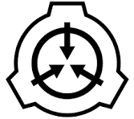
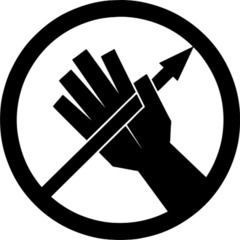
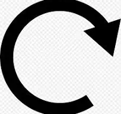

EMERGENCY EVENTS · CORE ARCHITECTURE
D-LRC
Dynamic Lockdown
Response Code
为持续变化的设施环境构建实时响应能力。 D-LRC 通过人口编制、异常威胁、战斗态势、 支援表现与战略风险持续判断当前局势， 将复杂战场压缩为一个可执行的响应代码。
CURRENT RESPONSE CODE
DLRC-A4-BIO+SYS
POPULATION · A
RESPONSE · L4
CRISIS · BIO
CRISIS · SYS
RESPONSE SCORE
73
/ 100
CONTROL STATE
失控 · UNCONTROLLED
SYSTEM PHILOSOPHY
不预测剧本。
判断局势。
D-LRC 不通过固定时间表决定“下一件事”。
系统持续读取战场事实，
对危机程度与控制能力重新评估，
让响应随着真实战局变化。
01 / OBSERVE
感知
收集人口、SCP 状态、基金会战斗力量、 观察者、主支援波、核设施状态等客观事实。
02 / EVALUATE
评估
将 SCP 威胁、基金会压力、支援失效、 时间与战略危险纳入统一 Response Score。
03 / RESPOND
响应
在专业危机分类与严重度基础上， 为后续 Event Director 提供合法的动态响应依据。
ARCHITECTURE
七层响应架构
从回合建立到最终特殊事件，
每个模块只承担一种职责，
共同组成 Emergency Events 动态响应框架。
01
Round Core
回合核心 · 动态开局编制
IMPLEMENTED
02
Reinforcement Integration
原生支援体系整合
IMPLEMENTED
03
D-LRC Evaluator
动态响应等级评估
IMPLEMENTED
04
Crisis System
专业危机识别与严重度
IMPLEMENTED
05
Event Director
动态事件候选与调度
PLANNED
06
O4 Command
指挥层信息与决策接口
PLANNED
07
Event Packs
专业响应单位与事件体系
PLANNED
CRISIS CLASSIFICATION
七类专业危机
全局响应等级说明“整体严重程度”，
Crisis Severity 则描述某一种专业危机自身的严重程度。
两套系统彼此独立。
BIO
生化危机
SYS
系统危机
CON

收容危机
SEC

安全危机
GOI
外部组织
WAR
核设施危机
END

终局危机
EMERGENCY EVENTS
让事件不再由脚本决定。
让响应由局势决定。
Emergency Events 正在构建一个能够持续感知、 评估并响应战场变化的动态设施事件框架。